Contents
- Graficar señal medida
- Graficar espectro de la señal medida
- FILTRO NOTCH para señal medida
- Graficar espectro de la señal medida tras filtro notch
- Sacar picos de señal medida, para sincronizar
- Recorte de señal medida (en caso de que al inicio haya regimen transitorio)
- Stacking de la señal medida
- Graficar señal trigger
- Graficar espectro de la señal medida
- FILTRO NOTCH para señal trigger
- Graficar espectro de la señal medida tras filtro notch
- Sacar picos de señal trigger
- Recorte del trigger
- Stacking del trigger
- Stacking de la señal medida
- Cálculo de la media de la señal
- Graficar excitación
- Graficar espectro de la excitación
- FILTRO NOTCH para la excitación
- Graficar espectro de la excitación tras filtro notch
- Graficar señal trigger excitación
- Graficar espectro de la señal trigger excitación
- FILTRO NOTCH para señal trigger excitación
- Graficar espectro de la señal medida tras filtro notch
- Sacar picos de señal trigger excitación
- Recorte del trigger
- Stacking del trigger
- Recorte de la señal de excitación
- Stacking de la excitación
- Cálculo de la media de la excitación
- Restar la excitación de las señales
clc,clear; close all; disp("Empieza"); global D bipolar = false; % ruta_ini = uigetdir('C:\Users\Antonio\Desktop\DOCTORADO\08_PrimerCurso\Hospital'); ruta_ini = "C:\Users\Antonio\Desktop\DOCTORADO\08_PrimerCurso\Hospital\2021_11\2021-11-11_20-02-02_07"; try ruta = ruta_ini +"\Record Node 102\experiment1\recording1\structure.oebin"; D = load_open_ephys_binary(ruta,'continuous',1); catch ruta = ruta_ini +"\Record Node 103\experiment1\recording1\structure.oebin"; D = load_open_ephys_binary(ruta,'continuous',1); end % ruta_ini_exc = uigetdir('C:\Users\Antonio\Desktop\DOCTORADO\08_PrimerCurso\Hospital'); ruta_ini_exc = "C:\Users\Antonio\Desktop\DOCTORADO\08_PrimerCurso\Hospital\2021_11\2021-11-11_20-25-02_12"; try ruta_exec = ruta_ini_exc +"\Record Node 102\experiment1\recording1\structure.oebin"; D_exc = load_open_ephys_binary(ruta_exec,'continuous',1); catch ruta_exec = ruta_ini_exc +"\Record Node 103\experiment1\recording1\structure.oebin"; D_exc = load_open_ephys_binary(ruta_exec,'continuous',1); end longitud_tiempo = size(D.Timestamps); tiempos = 0:1/D.Header.sample_rate:(longitud_tiempo(1)-1)*1/D.Header.sample_rate; longitud_tiempo_exc = size(D_exc.Timestamps); tiempos_exc = 0:1/D_exc.Header.sample_rate:(longitud_tiempo_exc(1)-1)*1/D_exc.Header.sample_rate; global lista_canales lista_canales = [2,3,14,15,1,4,13,16,5,6,11,12,7,8,9,10]; canal = 2; trigger = 32; datos = D.Data(lista_canales(canal),:); datos_trig = D.Data(32,:); datos_exc = D_exc.Data(lista_canales(canal),:); datos_trig_exc = D_exc.Data(32,:); datos = datos * 10^(-6); datos_trig = datos_trig * 10^(-6); datos_exc = datos_exc * 10^(-6); datos_trig_exc = datos_trig_exc * 10^(-6); %%%%%%%%%%%%%%%%%%%%%%%%%%%%%%%%%%%%%%%%%%%%%%%%%%%%%%%%%%%%%%%%%%%%%%%%%%%%%%%%%%%%%%%%%%%%%%%%%%%%%%%%%%%%%%%%%%%%% %%%%%%%%%%%%%%%%%%%%%%%%%%%%%%%%%%%%%%%%%%%%%%%%%%%%%%%%%%%%%%%%%%%%%%%%%%%%%%%%%%%%%%%%%%%%%%%%%%%%%%%%%%%%%%%%%%%%% %%%%%%%%%%%%%%%%%%%%%%%%%%%%%%%%%%%%%%%%%%%%%%%%%%%%%%%%%%%%%%%%%%%%%%%%%%%%%%%%%%%%%%%%%%%%%%%%%%%%%%%%%%%%%%%%%%%%%
Empieza
Graficar señal medida
fig = figure('Name',"Original"); fig.WindowState = 'maximized' ; plot(tiempos, datos, 'DisplayName','Original') title(strcat(" Señal original del canal ", num2str(lista_canales(canal)))); xlabel('Tiempo (s)') xlim([tiempos(1),tiempos(end)])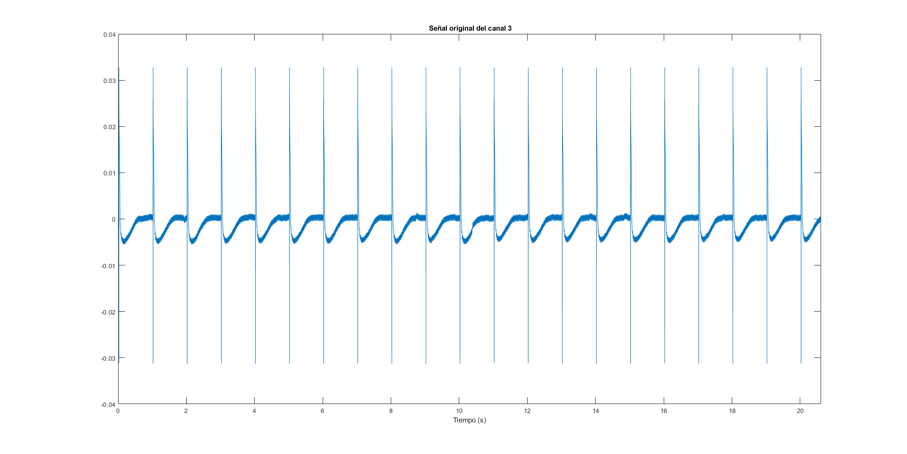
Graficar espectro de la señal medida
fig_esp = figure('Name',"Espectro"); title("Espectro frecuencial"); fig_esp.WindowState = 'maximized' ; grafEspectro(datos, 1000, fig_esp, 'Raw');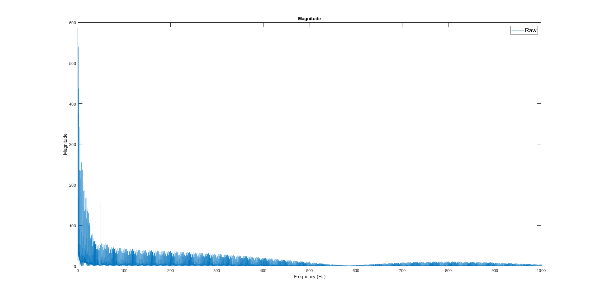
FILTRO NOTCH para señal medida
datos_notch = filter50(datos, tiempos); figure(fig); hold on; fig.WindowState = 'maximized' ; plot(tiempos, datos_notch, 'DisplayName','Notch'); lgd =legend; lgd.FontSize = 14;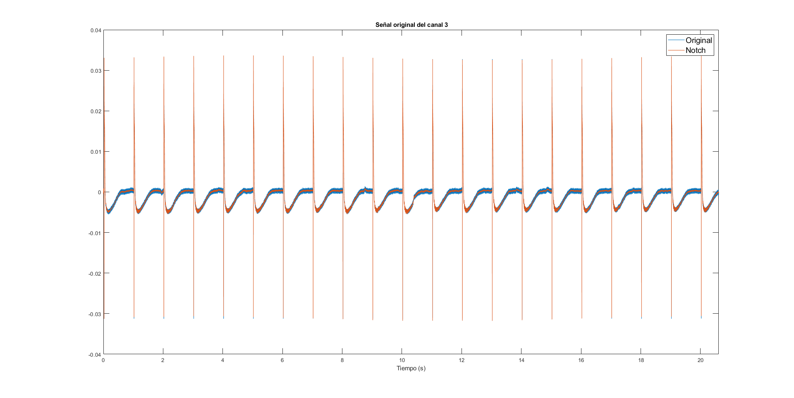
Graficar espectro de la señal medida tras filtro notch
grafEspectro(datos_notch, 1000, fig_esp, 'Notch');
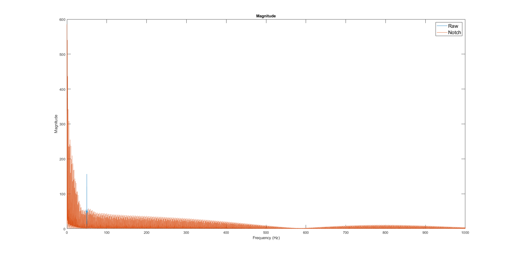 Sacar picos de señal medida, para sincronizar
fig_peaks = figure('Name',"Peaks"); fig_peaks.WindowState = 'maximized' ; findpeaks(datos_notch, tiempos, 'MinPeakProminence', 0.03, 'MinPeakDistance',0.5) [picos,loc_peak]= findpeaks(datos_notch, tiempos, 'MinPeakProminence', 0.03, 'MinPeakDistance',0.5);
Recorte de señal medida (en caso de que al inicio haya regimen transitorio)
global PrimerPico PrimerPico = 3;
[datos_rec, tiempos_rec] = recortarDatos(datos_notch, loc_peak(PrimerPico), loc_peak(end), tiempos); fig = figure('Name',"Original Recortada"); fig.WindowState = 'maximized' ; plot(tiempos_rec, datos_rec) title(strcat("Señal recortada del canal ", num2str(lista_canales(canal)))); xlabel('Tiempo (s)') xlim([tiempos_rec(1),tiempos_rec(end)])
Stacking de la señal medida
Dibujar las formas de onda "stack" separando pulso positivo y negativo if bipolar [datos_stack_Impar, datos_stack_Par] = stacking(datos_rec, tiempos_rec, loc_peak, true); figure('Name',"Stack Impar Señal"); for i=1:size(datos_stack_Impar,1) hold on; plot(datos_stack_Impar(i,:)) end figure('Name',"Stack Par Señal"); for i=1:size(datos_stack_Par,1) hold on; plot(datos_stack_Par(i,:)) end else % Dibujar las formas de onda "stack" datos_stack = stacking(datos_rec, tiempos_rec, loc_peak, false); figure('Name',"Stack Señal"); for i=1:size(datos_stack,1) hold on; plot(datos_stack(i,:)) legend; end end %% Cálculo de la media de la señal media = mean(datos_stack_Impar); figure; plot(media)
%%%%%%%%%%%%%%%%%%%%%%%%%%%%%%%%%%%%%%%%%%%%%%%%%%%%%%%%%%%%%%%%%%%%%%%%%%%%%%%%%%%%%%%%%%%%%%%%%%%%%%%%%%%%%%%%%%%%% %%%%%%%%%%%%%%%%%%%%%%%%%%%%%%%%%%%%%%%%%%%%%%%%%%%%%%%%%%%%%%%%%%%%%%%%%%%%%%%%%%%%%%%%%%%%%%%%%%%%%%%%%%%%%%%%%%%%% %%%%%%%%%%%%%%%%%%%%%%%%%%%%%%%%%%%%%%%%%%%%%%%%%%%%%%%%%%%%%%%%%%%%%%%%%%%%%%%%%%%%%%%%%%%%%%%%%%%%%%%%%%%%%%%%%%%%%
Graficar señal trigger
fig = figure('Name',"Trigger"); fig.WindowState = 'maximized' ; plot(tiempos, datos_trig, 'DisplayName','Trigger') title(" Señal Trigger "); xlabel('Tiempo (s)') xlim([tiempos(1),tiempos(end)])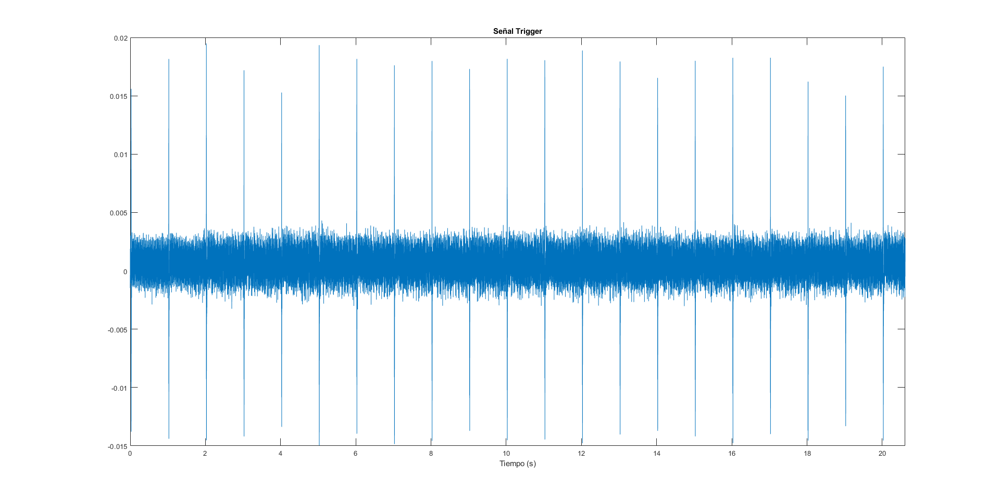
Graficar espectro de la señal medida
fig_esp_trig = figure('Name',"Espectro del trigger"); title("Espectro frecuencial trigger"); fig_esp_trig.WindowState = 'maximized' ; grafEspectro(datos_trig, 1000, fig_esp_trig, 'Raw');
FILTRO NOTCH para señal trigger
datos_notch_trig = filter50(datos_trig, tiempos); figure(fig); hold on; fig.WindowState = 'maximized' ; plot(tiempos, datos_notch_trig, 'DisplayName','Notch'); lgd =legend; lgd.FontSize = 14;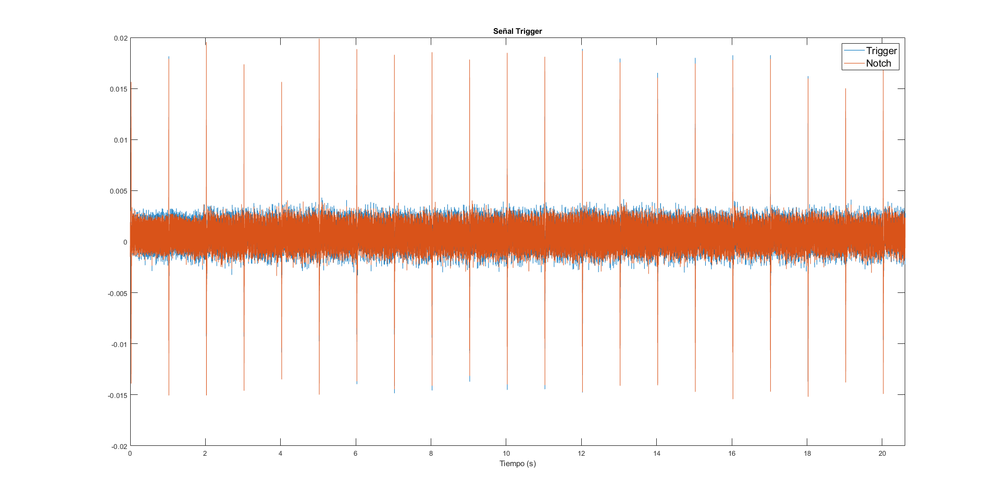
Graficar espectro de la señal medida tras filtro notch
grafEspectro(datos_notch_trig, 1000, fig_esp_trig, 'Notch');
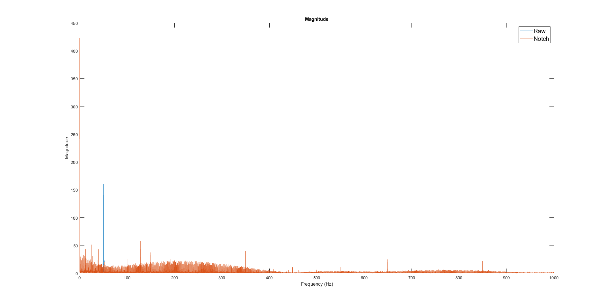 Sacar picos de señal trigger
fig_peaks = figure('Name',"Peaks Trigger"); fig_peaks.WindowState = 'maximized' ; findpeaks(datos_notch_trig, 'MinPeakHeight', 0.005) [picos_trig,loc_peak_trig]= findpeaks(datos_notch_trig, tiempos, 'MinPeakHeight', 0.005); loc_peak_trig_ok = loc_peak_trig(1) picos_trig_ok = picos_trig(1) figure(); plot(tiempos, datos_notch_trig) hold on; for i=1:size(loc_peak_trig,2)-1 if (loc_peak_trig(i+1)-loc_peak_trig(i)) > 0.5 % loc_peak_trig_ok = [loc_peak_trig_ok, loc_peak_trig(i+1)]; loc_peak_trig_ok = [loc_peak_trig_ok, loc_peak_trig(1)+size(loc_peak_trig_ok,2)]; picos_trig_ok = [picos_trig_ok, picos_trig(i+1)]; plot(loc_peak_trig(i+1), picos_trig(i+1), 'o-'); % xline(loc_peak_trig(i+1)) end end
loc_peak_trig_ok =
0.0240
picos_trig_ok =
0.0111
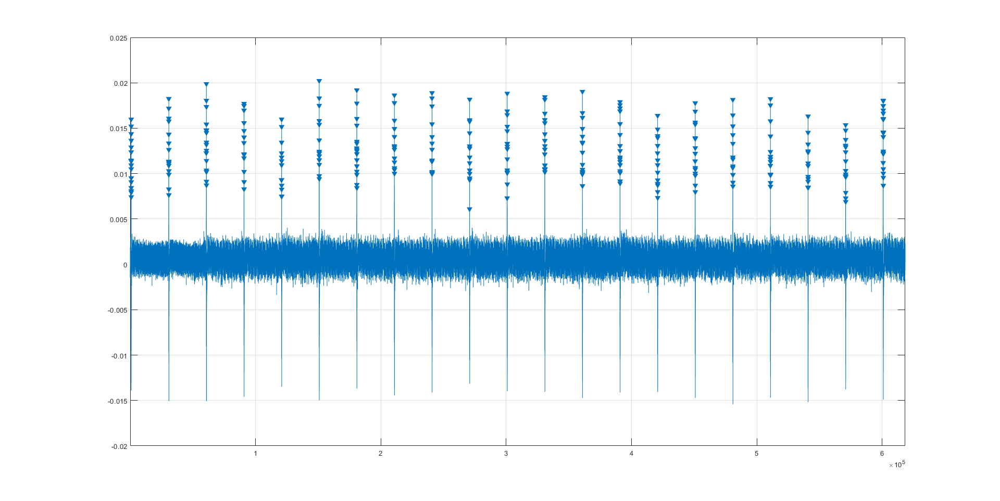 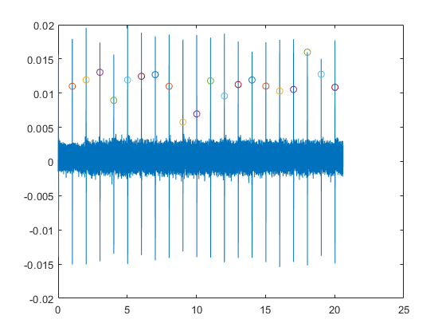 Recorte del trigger
De momento no hace falta
Stacking del trigger
% Dibujar las formas de onda "stack" separando pulso positivo y negativo if bipolar [datos_stack_Impar_trig, datos_stack_Par_trig] = stacking(datos_trig, tiempos, loc_peak, true); figure('Name',"Stack Impar Señal"); for i=1:size(datos_stack_Impar_trig,1) hold on; plot(datos_stack_Impar_exc(i,:)) end figure('Name',"Stack Par Señal"); for i=1:size(datos_stack_Par_trig,1) hold on; plot(datos_stack_Par_trig(i,:)) end else Dibujar las formas de onda "stack"
global PrimerPico PrimerPico = 1; datos_stack_trig = stacking(datos_notch_trig, tiempos, loc_peak_trig_ok, false); figure('Name',"Stack Trigger"); for i=1:size(datos_stack_trig,1) hold on; plot(datos_stack_trig(i,:)) legend; end % end %%%%%%%%%%%%%%%%%%%%%%%%%%%%%%%%%%%%%%%%%%%%%%%%%%%%%%%%%%%%%%%%%%%%%%%%%%%%%%%%%%%%%%%%%%%%%%%%%%%%%%%%%%%%%%%%%%%%% %%%%%%%%%%%%%%%%%%%%%%%%%%%%%%%%%%%%%%%%%%%%%%%%%%%%%%%%%%%%%%%%%%%%%%%%%%%%%%%%%%%%%%%%%%%%%%%%%%%%%%%%%%%%%%%%%%%%% %%%%%%%%%%%%%%%%%%%%%%%%%%%%%%%%%%%%%%%%%%%%%%%%%%%%%%%%%%%%%%%%%%%%%%%%%%%%%%%%%%%%%%%%%%%%%%%%%%%%%%%%%%%%%%%%%%%%%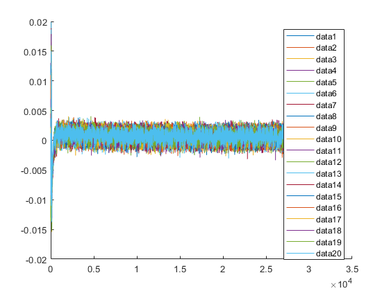
Stacking de la señal medida
Dibujar las formas de onda "stack" separando pulso positivo y negativo if bipolar [datos_stack_Impar, datos_stack_Par] = stacking(datos_rec, tiempos_rec, loc_peak, true); figure('Name',"Stack Impar Señal"); for i=1:size(datos_stack_Impar,1) hold on; plot(datos_stack_Impar(i,:)) end figure('Name',"Stack Par Señal"); for i=1:size(datos_stack_Par,1) hold on; plot(datos_stack_Par(i,:)) end else Dibujar las formas de onda "stack"
datos_stack = stacking(datos_notch, tiempos, loc_peak_trig_ok, false);
figure('Name',"Stack Señal");
for i=1:size(datos_stack,1)
hold on;
plot(datos_stack(i,:))
legend;
end
% end
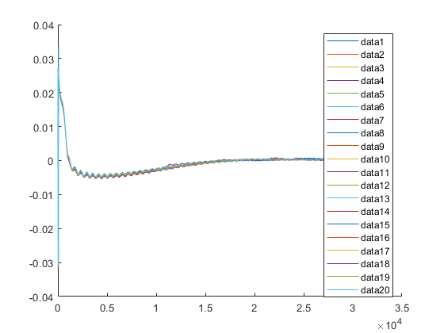 Cálculo de la media de la señal
media = mean(datos_stack); figure; plot(media) %%%%%%%%%%%%%%%%%%%%%%%%%%%%%%%%%%%%%%%%%%%%%%%%%%%%%%%%%%%%%%%%%%%%%%%%%%%%%%%%%%%%%%%%%%%%%%%%%%%%%%%%%%%%%%%%%%%%% %%%%%%%%%%%%%%%%%%%%%%%%%%%%%%%%%%%%%%%%%%%%%%%%%%%%%%%%%%%%%%%%%%%%%%%%%%%%%%%%%%%%%%%%%%%%%%%%%%%%%%%%%%%%%%%%%%%%% %%%%%%%%%%%%%%%%%%%%%%%%%%%%%%%%%%%%%%%%%%%%%%%%%%%%%%%%%%%%%%%%%%%%%%%%%%%%%%%%%%%%%%%%%%%%%%%%%%%%%%%%%%%%%%%%%%%%%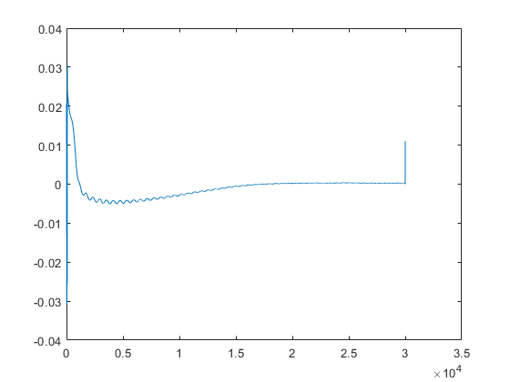
Graficar excitación
fig_exc = figure('Name',"Excitación"); fig_exc.WindowState = 'maximized' ; plot(tiempos_exc, datos_exc) title(strcat(" Excitación del canal ", num2str(lista_canales(canal)))); xlabel('Tiempo (s)') xlim([tiempos_exc(1),tiempos_exc(end)])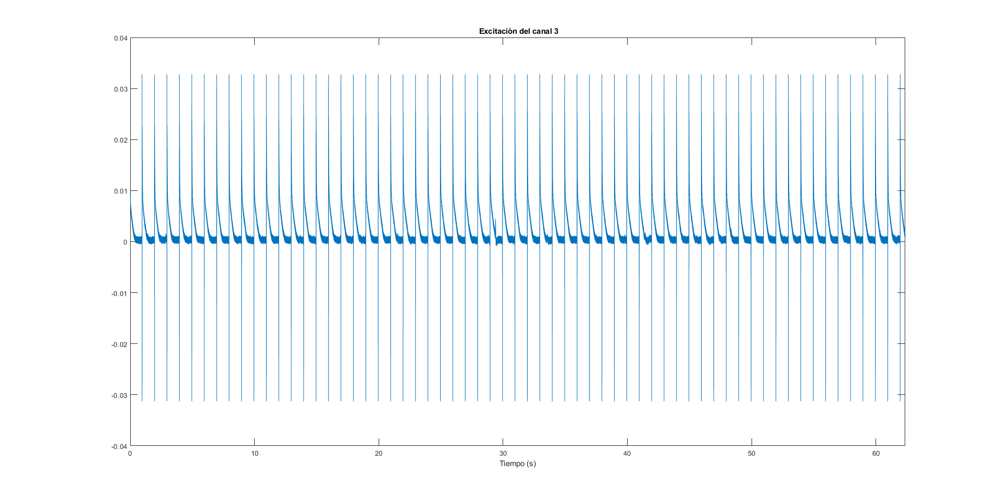
Graficar espectro de la excitación
fig_esp_exc = figure('Name',"Espectro de la excitación"); title("Espectro frecuencial de la excitación"); fig_esp_exc.WindowState = 'maximized' ; grafEspectro(datos_exc, 1000, fig_esp_exc, 'Raw');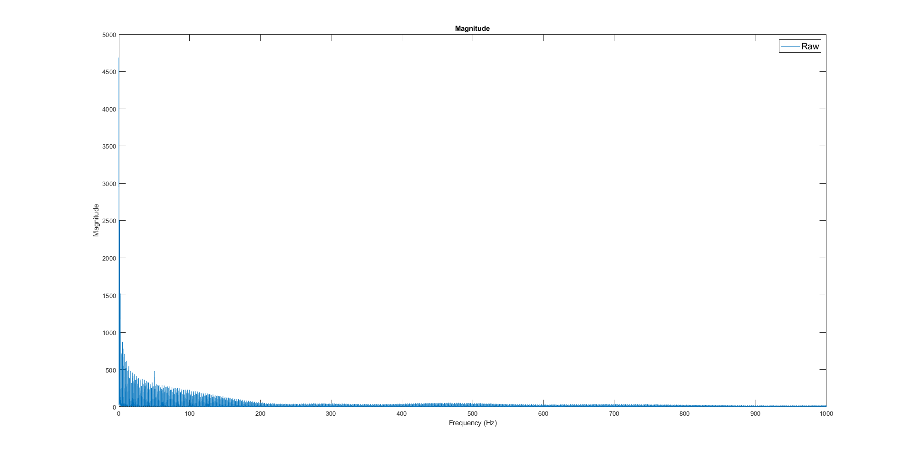
FILTRO NOTCH para la excitación
datos_notch_exc = filter50(datos_exc, tiempos_exc); figure(fig_exc); hold on; fig.WindowState = 'maximized' ; plot(tiempos_exc, datos_notch_exc, 'DisplayName','Notch'); lgd =legend; lgd.FontSize = 14; % datos_exc = datos_notch_exc;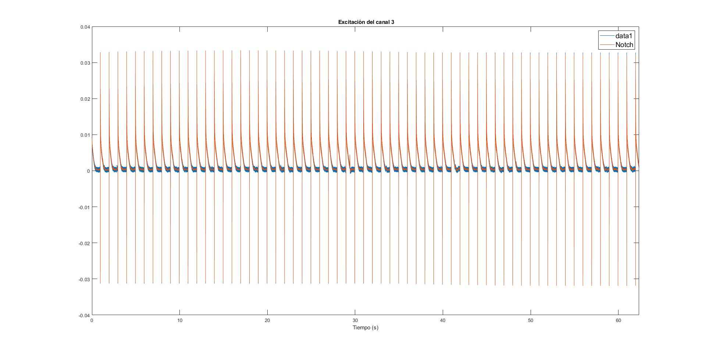
Graficar espectro de la excitación tras filtro notch
grafEspectro(datos_notch_exc, 1000, fig_esp_exc, 'Notch'); %%%%%%%%%%%%%%%%%%%%%%%%%%%%%%%%%%%%%%%%%%%%%%%%%%%%%%%%%%%%%%%%%%%%%%%%%%%%%%%%%%%%%%%%%%%%%%%%%%%%%%%%%%%%%%%%%%%%% %%%%%%%%%%%%%%%%%%%%%%%%%%%%%%%%%%%%%%%%%%%%%%%%%%%%%%%%%%%%%%%%%%%%%%%%%%%%%%%%%%%%%%%%%%%%%%%%%%%%%%%%%%%%%%%%%%%%% %%%%%%%%%%%%%%%%%%%%%%%%%%%%%%%%%%%%%%%%%%%%%%%%%%%%%%%%%%%%%%%%%%%%%%%%%%%%%%%%%%%%%%%%%%%%%%%%%%%%%%%%%%%%%%%%%%%%%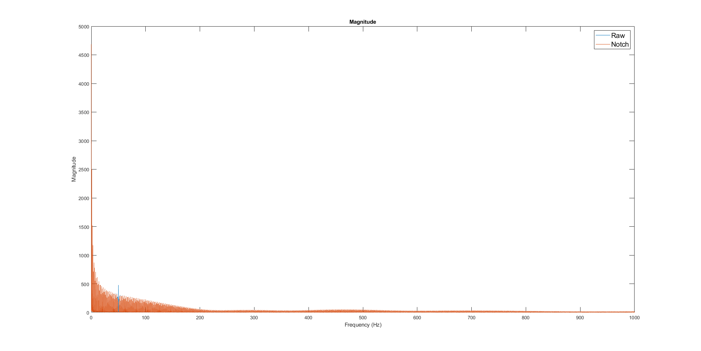
Graficar señal trigger excitación
fig = figure('Name',"Trigger Excitación"); fig.WindowState = 'maximized' ; plot(tiempos_exc, datos_trig_exc, 'DisplayName','Trigger Excitación') title(" Señal Trigger "); xlabel('Tiempo (s)') xlim([tiempos_exc(1),tiempos_exc(end)])

Graficar espectro de la señal trigger excitación
fig_esp_trig_exc = figure('Name',"Espectro del trigger Excitación"); title("Espectro frecuencial trigger Excitación"); fig_esp_trig_exc.WindowState = 'maximized' ; grafEspectro(datos_trig_exc, 1000, fig_esp_trig_exc, 'Raw');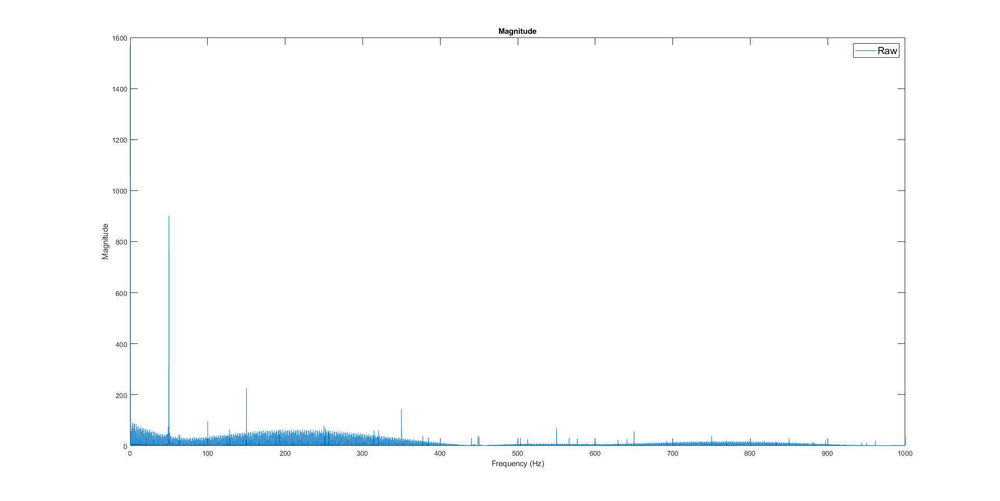
FILTRO NOTCH para señal trigger excitación
datos_notch_trig_exc = filter50(datos_trig_exc, tiempos_exc); figure(fig); hold on; fig.WindowState = 'maximized' ; plot(tiempos_exc, datos_notch_trig_exc, 'DisplayName','Notch'); lgd =legend; lgd.FontSize = 14;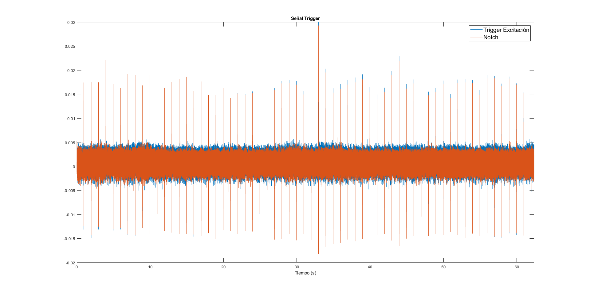
Graficar espectro de la señal medida tras filtro notch
grafEspectro(datos_notch_trig_exc, 1000, fig_esp_trig_exc, 'Notch');
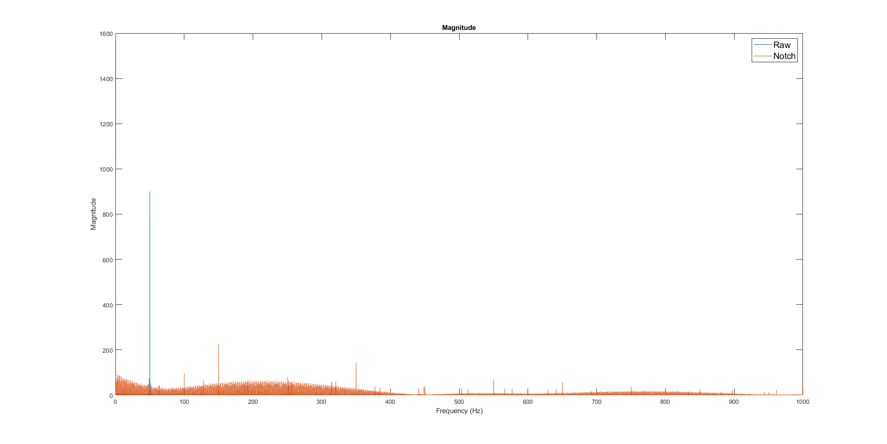 Sacar picos de señal trigger excitación
fig_peaks = figure('Name',"Peaks Trigger Excitación"); fig_peaks.WindowState = 'maximized' ; findpeaks(datos_notch_trig_exc, 'MinPeakHeight', 0.007) [picos_trig_exc,loc_peak_trig_exc]= findpeaks(datos_notch_trig_exc, tiempos_exc, 'MinPeakHeight', 0.007); primerTrigger = 2; primerTrigger = find(loc_peak_trig_exc>(primerTrigger-1) & loc_peak_trig_exc<primerTrigger); primerTrigger = primerTrigger(1); loc_peak_trig_exc_ok = loc_peak_trig_exc(primerTrigger); picos_trig_exc_ok = picos_trig_exc(primerTrigger); figure(); plot(tiempos_exc, datos_notch_trig_exc) hold on; for i=primerTrigger:size(loc_peak_trig_exc,2)-1 if (loc_peak_trig_exc(i+1)-loc_peak_trig_exc(i)) > 0.5 % loc_peak_trig_exc_ok = [loc_peak_trig_exc_ok, loc_peak_trig_exc(i+1)]; loc_peak_trig_exc_ok = [loc_peak_trig_exc_ok, loc_peak_trig_exc(primerTrigger)+size(loc_peak_trig_exc_ok,2)]; picos_trig_exc_ok = [picos_trig_exc_ok, picos_trig_exc(i+1)]; plot(loc_peak_trig_exc(i), picos_trig_exc(i), 'o-'); % xline(loc_peak_trig(i+1)) end end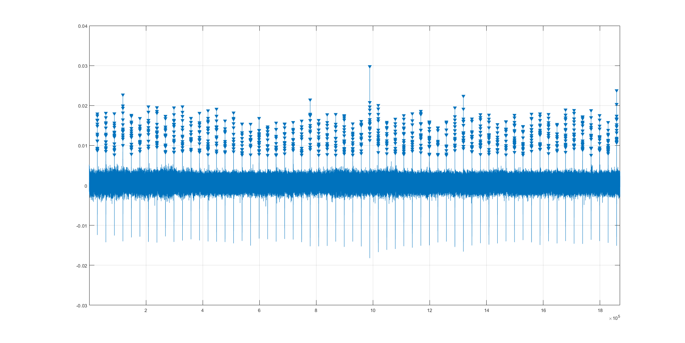 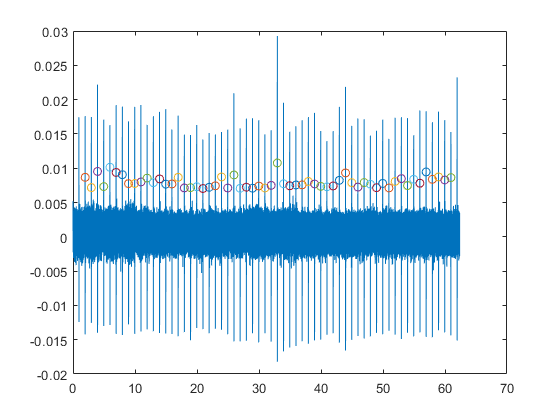
Recorte del trigger
De momento no hace falta
Stacking del trigger
% Dibujar las formas de onda "stack" separando pulso positivo y negativo if bipolar [datos_stack_Impar_trig, datos_stack_Par_trig] = stacking(datos_trig, tiempos, loc_peak, true); figure('Name',"Stack Impar Señal"); for i=1:size(datos_stack_Impar_trig,1) hold on; plot(datos_stack_Impar_exc(i,:)) end figure('Name',"Stack Par Señal"); for i=1:size(datos_stack_Par_trig,1) hold on; plot(datos_stack_Par_trig(i,:)) end else Dibujar las formas de onda "stack"
global PrimerPico PrimerPico = 1; datos_stack_trig_exc = stacking(datos_notch_trig_exc, tiempos_exc, loc_peak_trig_exc_ok, false); figure('Name',"Stack Trigger Excitación"); for i=1:size(datos_stack_trig_exc,1) hold on; plot(datos_stack_trig_exc(i,:)) legend; end % end %%%%%%%%%%%%%%%%%%%%%%%%%%%%%%%%%%%%%%%%%%%%%%%%%%%%%%%%%%%%%%%%%%%%%%%%%%%%%%%%%%%%%%%%%%%%%%%%%%%%%%%%%%%%%%%%%%%%% %%%%%%%%%%%%%%%%%%%%%%%%%%%%%%%%%%%%%%%%%%%%%%%%%%%%%%%%%%%%%%%%%%%%%%%%%%%%%%%%%%%%%%%%%%%%%%%%%%%%%%%%%%%%%%%%%%%%% %%%%%%%%%%%%%%%%%%%%%%%%%%%%%%%%%%%%%%%%%%%%%%%%%%%%%%%%%%%%%%%%%%%%%%%%%%%%%%%%%%%%%%%%%%%%%%%%%%%%%%%%%%%%%%%%%%%%%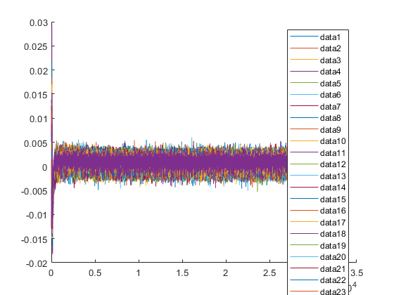
Recorte de la señal de excitación
[datos_rec_exc, tiempos_rec_exc] = recortarDatos(datos_exc, 5, 50, tiempos_exc); fig = figure('Name',"Excitación Recortada"); fig.WindowState = 'maximized' ; plot(tiempos_rec_exc, datos_rec_exc) title(strcat("Señal de excitación recortada del canal ", num2str(lista_canales(canal)))); xlabel('Tiempo (s)') xlim([tiempos_rec_exc(1),tiempos_rec_exc(end)]) %% Sacar picos en señal de excitación (recortada) fig_peaks_exc = figure('Name',"Peaks Exc"); fig_peaks_exc.WindowState = 'maximized' ; findpeaks(datos_rec_exc, tiempos_rec_exc, 'MinPeakProminence', 0.03, 'MinPeakDistance',0.5) [picos_exc,loc_peak_exc]= findpeaks(datos_rec_exc, tiempos_rec_exc, 'MinPeakProminence', 0.03, 'MinPeakDistance',0.5);
Stacking de la excitación
Dibujar las formas de onda "stack" separando pulso positivo y negativo if bipolar [datos_stack_Impar_exc, datos_stack_Par_exc] = stacking(datos_rec_exc, tiempos_rec_exc, loc_peak_exc, true); fig_stack_i = figure('Name',"Stack Impar Excitación"); for i=1:size(datos_stack_Impar_exc,1) hold on; plot(datos_stack_Impar_exc(i,:)) end fig_stack_p = figure('Name',"Stack Par Excitación"); for i=1:size(datos_stack_Par_exc,1) hold on; plot(datos_stack_Par_exc(i,:)) end else Dibujar las formas de onda "stack"
datos_stack_exc = stacking(datos_notch_exc, tiempos_exc, loc_peak_trig_exc_ok, false);
fig_stack_exc = figure('Name',"Stack Excitación");
for i=1:size(datos_stack_exc,1)
hold on;
plot(datos_stack_exc(i,:))
legend;
end
% end
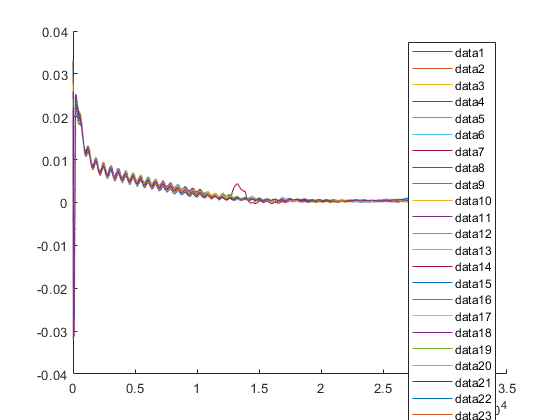 Cálculo de la media de la excitación
avg_signal_exc = mean(datos_stack_exc); figure(fig_stack_exc); plot(avg_signal_exc, 'LineWidth',3,'DisplayName',"Media"); std_pos_exc = avg_signal_exc + std(datos_stack_exc); plot(std_pos_exc, 'LineWidth',3,'DisplayName',"Std Pos"); std_neg_exc = avg_signal_exc - std(datos_stack_exc); plot(std_neg_exc, 'LineWidth',3,'DisplayName',"Std Neg"); %%%%%%%%%%%%%%%%%%%%%%%%%%%%%%%%%%%%%%%%%%%%%%%%%%%%%%%%%%%%%%%%%%%%%%%%%%%%%%%%%%%%%%%%%%%%%%%%%%%%%%%%%%%%%%%%%%%%% %%%%%%%%%%%%%%%%%%%%%%%%%%%%%%%%%%%%%%%%%%%%%%%%%%%%%%%%%%%%%%%%%%%%%%%%%%%%%%%%%%%%%%%%%%%%%%%%%%%%%%%%%%%%%%%%%%%%% %%%%%%%%%%%%%%%%%%%%%%%%%%%%%%%%%%%%%%%%%%%%%%%%%%%%%%%%%%%%%%%%%%%%%%%%%%%%%%%%%%%%%%%%%%%%%%%%%%%%%%%%%%%%%%%%%%%%% %%%%%%%%%%%%%%%%%%%%%%%%%%%%%%%%%%%%%%%%%%%%%%%%%%%%%%%%%%%%%%%%%%%%%%%%%%%%%%%%%%%%%%%%%%%%%%%%%%%%%%%%%%%%%%%%%%%%% %%%%%%%%%%%%%%%%%%%%%%%%%%%%%%%%%%%%%%%%%%%%%%%%%%%%%%%%%%%%%%%%%%%%%%%%%%%%%%%%%%%%%%%%%%%%%%%%%%%%%%%%%%%%%%%%%%%%%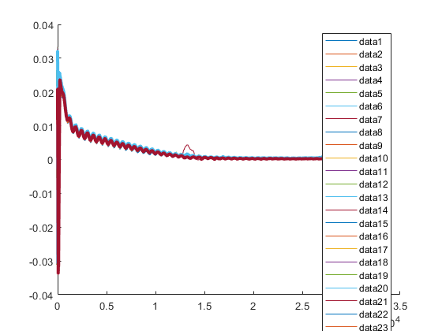
Restar la excitación de las señales
avg_signal = mean(datos_stack);
resta = avg_signal - avg_signal_exc;
figure;
tiempos_resta = 0:1/D.Header.sample_rate:(size(resta,2)-1)*1/D.Header.sample_rate;
plot(tiempos_resta, resta);
fig_Resta = figure();
% grafEspectro(resta, 1000, fig_Resta, 'Espectro de la resta');
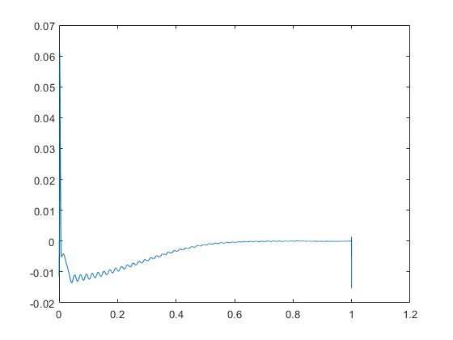